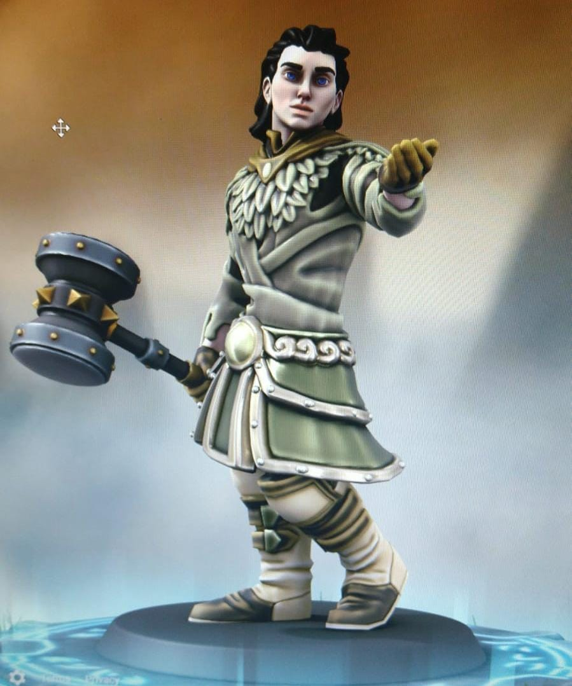
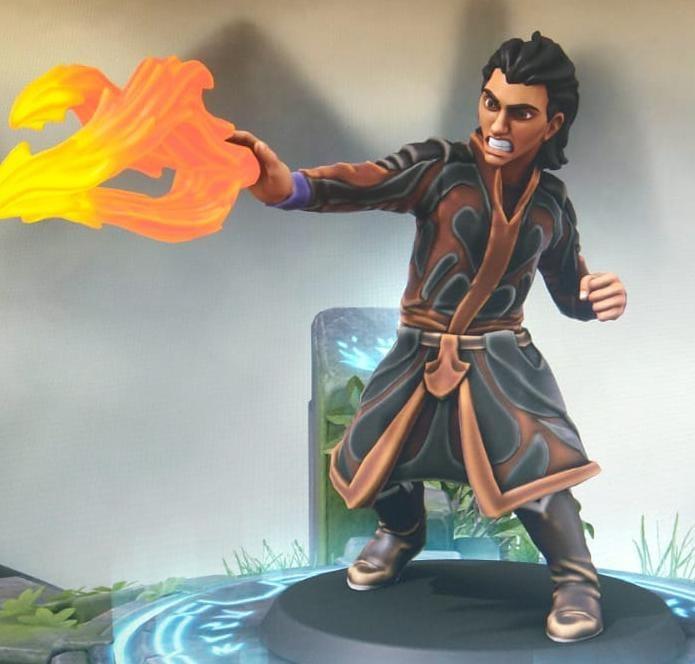
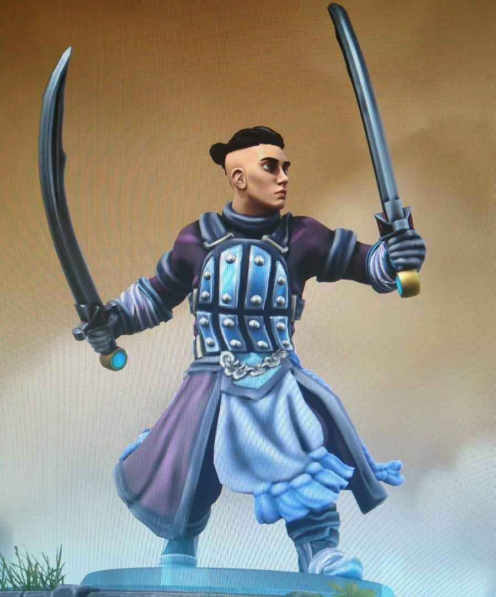

Os Protagonistas
Akvyr
Akvyr é um saruhmie de cabelos negros, e isso significa que tem uma capacidade intelectual acima da media. Porém nasceu em uma época em que os antigos costumes e as antigas castas já não existiam mais; mesmo sua cor de cabelo rara e especial não o salvou de uma juventude de aprendiz de agricultor nas Planícies de Trigo. Passou o começo de sua vida com sua mãe, cujo nome foi esquecido (na verdade eu não criei ainda) e seu irmão Malik, que era ruivo. Ainda novo conheceu um outro jovem saruhmie, um pouco mais novo que ele: Kobe, de cabelos castanhos; os dois compartilhavam da mesma paixão e curiosidade pelo mundo, e logo se tornaram amigos; por proximidade, Akvyr se tornou amigo da irmã de Kobe: Nalla, de cabelos ruivos. Poucos anos mais tarde, os quatro conheceram o principe Marko, de cabelos negros; Marko não era como um principe dos humanos, era uma criança comum, mas cresceu na Grande Arvore com seu pai, o Rei. Pela amizade com Marko, Akvyr e os outros passaram muito tempo nos salões da Grande Árvore, e ouviram muitas histórias dos anciões. Akvyr se interessava particularmente pela história do salvador que um dia retornaria, e sonhava dia e noite sobre o dia de seu retorno, em que ele próprio poderia ser um guerreiro no exército do salvador contra as criaturas de fogo. Akvyr dedicou o resto da sua vida a se tornar um guerreiro, na esperança de que o salvador retornaria, mesmo contra as advertências dos mais velhos, ninguém acreditava mais que o salvador retornaria de fato; mas Marko nunca duvidou da determinação de Akvyr.
(sim, essa foto é do Marko, eu n tenho nenhuma referencia pro Akvyr, me deixa :p)
Para a surpresa de todos, e contendo de Akvyr, num dia comum desses que se passa sem se dar conta, o salvador retornou! E ele chegou chamando por seguidores, pois dizia que o dia da batalha estaria próximo. Ninguém lhe deu ouvidos, exceto por Akvyr, que aceitou a oferta, e fez do salvador seu mestre, sem nem pensar duas vezes; e honrando a amizade e confiando na determinação do amigo, Marko o seguiu, e então os outros também, seguindo o exemplo do jovem príncipe. Mesmo contra as recomendações do Rei, os jovens seguiram treinando para se tornarem guerreiros com seu novo mestre.
Numa noite infeliz, as criaturas de fogo, há muito esquecidas, atacaram o Vale e tiraram muitas vidas; pois os aprendizes do salvador ainda não estavam prontos para defender sua casa, sem contar com a diferença nos números! Malik, irmão de Akvyr, foi morto na batalha, mas eventualmente as criaturas de fogo desistiram e recuaram. Akvyr ficou devastado, teria sucumbido à tristeza senão pela presença de Marko. O mestre ficou tomado de remorso, e tomou a perda como sua culpa; sem demora partiu em jornada com seus aprendizes, para além das florestas e montanhas, para além do mar e da sombra, para a terra dos humanos, onde os segredos do mundo dormem sob barbas velhas e folhas de papel.
Akvyr é o protagonista da primeira parte da série, e durante sua jornada para a terra dos humanos, ele se deparará com dúvidas sobre si, e sobre o mundo a sua volta, enquanto aprende mais sobre esses seres tão similares, e mesmo assim tão diferentes. Logo ele desvendará os segredos que lhe permitiram defender a sua casa quando a hora chegar, e poderá provar que é capaz de ser um líder para seus amigos, apesar de ser eternamente atormentado pela sombra de seu irmão morto.
Balthasar
Durante a primeira parte, Akvyr e seus companheiros exploram uma ilha onde vivem humanos, e se deparam com uma paisagem cheia de história e personagens interessantes. A segunda parte volta no passado, milhares de anos antes dos acontecimentos da primeira parte, para acompanhar a vida de Balthasar, o Senhor do Fogo, um dos Quatro, co-lider do Norte e professor na Universidade de Eternamanhã.
Balthasar era um jovem de família rica das praias ao leste da ilha, perto da região conhecida como O Trono de Deus. Seu pai era seu melhor amigo, ambos eram considerados aberrações em sua comunidade, pois eram os dois das primeiras gerações de animantes. Os animantes são pessoas capazes de estender sua influência e pensamento para fora de seu corpo, e por isso eram temidos nessa época, em que começavam a aparecer. Depois da morte de seu pai, Balthasar foi ostracionado de sua comunidade e ficou recluso em sua casa por alguns anos, estudando seus poderes e atingindo novos limites com eles.
Um dia, Balthasar recebeu uma carta para um evento que ficou conhecido como a Convenção de Lidzlow. Os animantes começaram a se agrupar e recrutar outros animantes, para que assim pudessem aprender os segredos da animancia sem se esconderem das pessoas comuns. Durante a Convenção de Lidzlow, Balthasar conheceu outros animantes notáveis, entre eles: Gaspar, Melchior e Mariah; eles se tornariam Os Quatro, uma ordem dos animantes mais poderosos do mundo; Balthasar também se encontrou com Isis, a mulher que era dita ser o avatar do próprio tempo, que garantiu aos Quatro a imortalidade através da reencarnação.
Balthasar agora deve buscar sentido numa vida infinda, ao lado de Mariah, o amor de sua vida, que apesar de ser imortal, tem o destino separado do de Balthasar pela ironia dos deuses. Enquanto isso, os bruxos, pessoas que usam o poder demoníaco para imitar a animancia, ascendem das sombras, eventualmente causando as Guerras Mágicas, que mudariam o cenário geopolítico da ilha para sempre.
Viktor
Viktor Aleksey é um jovem russo de vida medíocre. Ele mora com os colegas de quarto nos fundos de um teatro onde ele costuma se apresentar como bailarino. Ele pensa já ter atingido seu sonho, e lentamente a ambição começa a deixá-lo, para dar lugar ao conformismo. Pouco lhe importa as pessoas ao seu redor, e menos ainda lhe importa seu futuro.
Porém, enquanto Viktor caminhava até um restaurante para almoçar, um evento cataclísmico começa a se desenvolver na terra. De repente, Viktor se vê perante a decisão entre salvar a própria vida ou salvar a vida de duas crianças, cuja mãe havia sido morta durante o caos do apocalipse repentino; ele acaba salvando as crianças, e sem saber, salvando a si mesmo. Agora Viktor tenta criar as duas crianças, em um mundo diferente, em ruínas, onde apenas eles sobreviveram; não apenas isso, mas enquanto as crianças crescem, começam a ter visões de um passado distante. Nessas visões, Viktor encontra uma esperança de reconstruir o mundo, bem como uma nova razão para viver.
